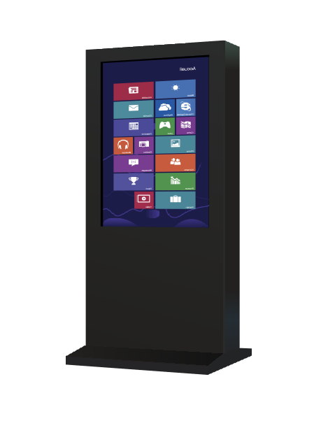
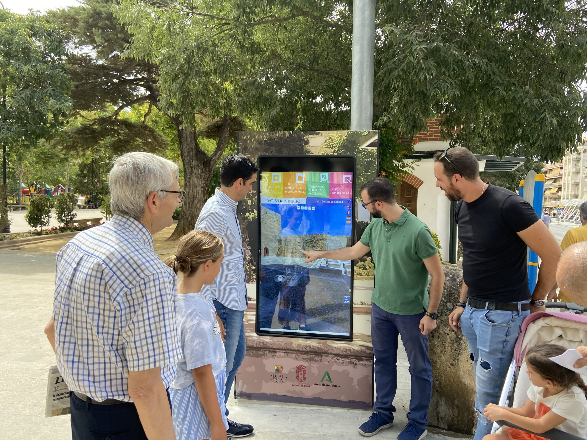
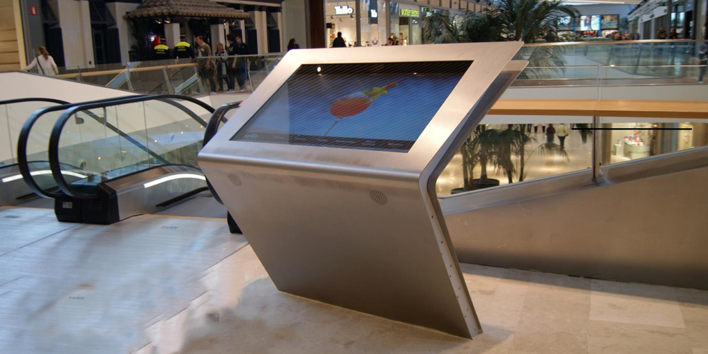
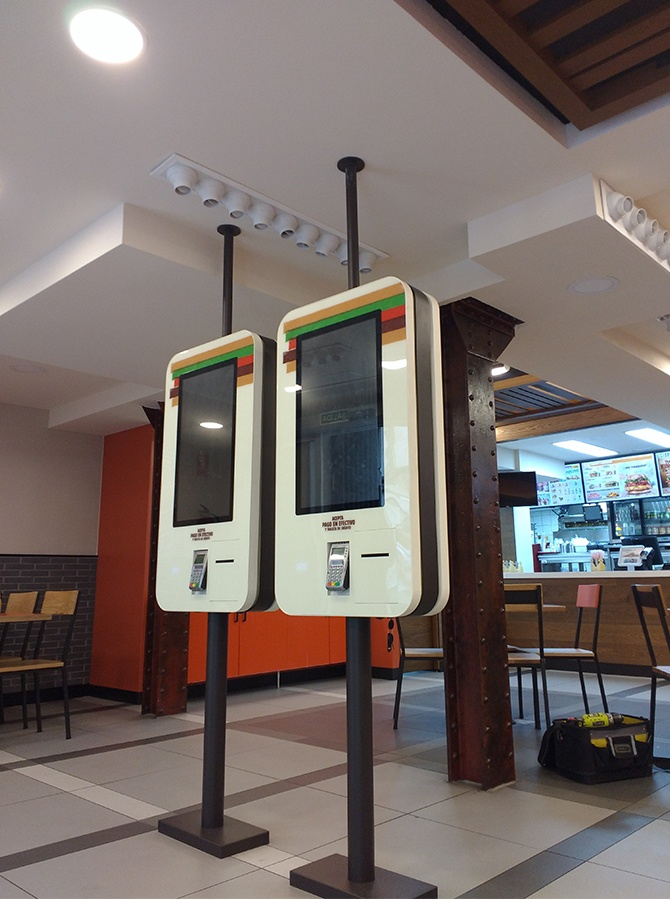
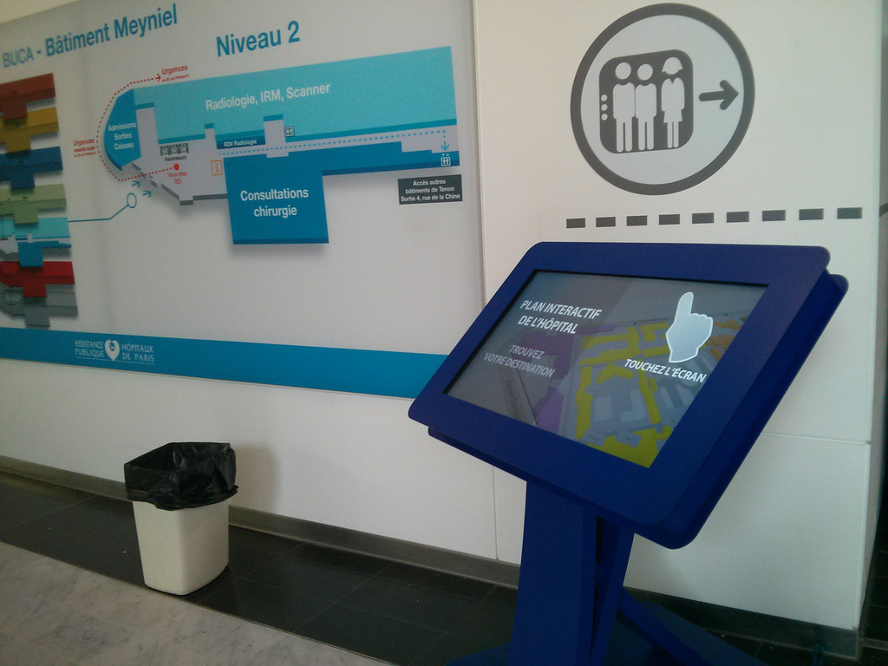

DISPOSITIVO HARDWARE DE ITERACION PERSONA ORDENADOR
Descripcion del totem interactivo

Un tótem interactivo es un conjunto de hardware y software que sirve para facilitar información al turista o comprador y promocionar espacios, servicios, productos o eventos; además de prestar servicios a restaurantes o comercios.
Aunque pueden mostrar cartelería digital son conceptos distintos, ya que el tótem interactivo permite que el usuario pueda interactuar con la información que muestra la pantalla.
Pueden ser tanto de interior como de exterior; los de interior son tótems más económicos porque tienen unas necesidades inferiores a los de exterior.
Los tótems interactivos de interior y de exterior comparten tamaños de pantallas, funcionamiento, software y resto de características. Para conocer mas en profundidad estos tótems normalmente son verticales u horizontales con una pantalla de entre 14” y 85” con capacidad táctil, cámaras de realidad aumentada, y un ordenador normalmente con un procesador i5 o i7 con una interfaz de uso limitada a lo que requiera ese tótem.
Ventajas y desventajas de uso


En cuanto a las ventajas y beneficios de los que podemos hablar, son amplios:
En cuanto tema de accesibilidad una interfaz táctil con botones de gran tamaño acompañados de colores y figuras permite al usuario acceder a la información con rapidez, incluso también si se trata de un niño o una persona de edad avanzada o con alguna discapacidad intelectual.
El uso de realidad aumentada es un factor que juega más en plano del marketing o atractivo del tótem que en el plano de la accesibilidad, no obstante, es un factor importante en la iteración persona ordenador.
El tótem sonidos e imágenes además de subtítulos y textos ayuda a personas sordas o con discapacidades visuales, solamente se puede presentar un tema de interacción con personas que presenten un problema con la interfaz de uso táctil para interactuar con la información.
Utilidades y aplicaciones


Las aplicaciones de este dispositivo son muy diversas; se pueden presentar como centro de publicidad o información en comercios o centros comerciales, donde se promocionen productos o se transmita información de un lugar con la que un usuario pretende interactuar; si no también como herramienta de organización no solo informativa pudiendo realizar funciones como recoger vez en las salas de esperas de hospitales o recoger un pedido y transmitir la comanda en un restaurante, o como probador virtual de maquillaje ropa y complementos incluso de cortes de pelo.